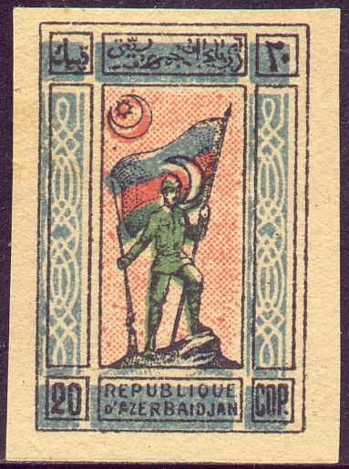
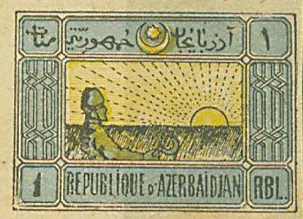

From 1923 on the stamps of the Transcaucasian federation were used.
Note: on my website many of the
pictures can not be seen! They are of course present in the
catalogue;
contact me if you want to purchase the catalogue.

Genuine stamp, image obtained from
http://www.rossica.org/Samovar/viewthread.php?tid=395
10 k green, blue and red (soldier with flag) 20 k blue, green and red (soldier with flag) 40 k green and yellow (harvester) 60 k red and yellow (harvester) 1 R blue, yellow and green (harvester) 2 R red and yellow (Baku city walls) 5 R blue and yellow (Baku city walls) 10 R green and yellow (Baku city walls) 25 R blue and red (temple) 50 R green and red (temple) Surcharged

(Reduced size)
25000 on 10 k 50000 on 20 k 75000 on 40 k 100000 on 60 k 200000 on 1 R 300000 on 2 R 500000 on 5 R 750000 on 40 k
Value of the stamps |
|||
vc = very common c = common * = not so common ** = uncommon |
*** = very uncommon R = rare RR = very rare RRR = extremely rare |
||
| Value | Unused | Used | Remarks |
| 10 k | * | * | |
| 20 k | * | * | |
| 40 k | * | * | |
| 60 k | * | * | |
| 1 R | c | * | |
| 2 R | * | * | |
| 5 R | * | * | Two types: ornaments at the left pointing up or downwards |
| 10 R | * | * | Two types: ornaments at the left pointing up or downwards |
| 25 R | * | * | |
| 50 R | * | * | |
| Surcharged | |||
| 25000 on 10 k | *** | *** | |
| 50000 on 20 k | *** | *** | |
| 75000 on 40 k | *** | *** | |
| 100000 on 60 k | *** | *** | |
| 200000 on 1 R | *** | *** | |
| 300000 on 2 R | R | R | |
| 500000 on 5 R | R | R | |
| 750000 on 40 k | RR | RR | |
The 20 k stamp (man with flag) has been forged according to 'Focus on forgeries': The star in the crescent has almost no points (for a picture of the genuine stamp see picture above). Moreover, the "A" and "Z" of "AZERBAIDJAN" and the "D" and "J" don't touch each other in the genuine stamps (they do in the forgeries).

Forgery of the 20 k stamp, image obtained from
http://www.rossica.org/Samovar/viewthread.php?tid=395
The 40 k, 60 k and 1 R (harvester) have also been forged. In the genuine stamps (according to 'Focus on forgeries), there is a ray of sunlight just in front of the nose of the farmer (this ray is absent in the forgeries). For a picture of a genuine stamp, see above.

Forgery of the 1 R stamp with no ray in front of the nose of the
farmer.
For forgeries of the 2 R, 5 R and 10 R (city) see 'Focus on forgeries'.

Forgery of the 10 R stamp, image obtained from
http://www.rossica.org/Samovar/viewthread.php?tid=395
For forgeries of the 25 R and 50 R (temple with flames) see 'Focus on forgeries'. The 25 R forgery has the word 'RBL' larger and the star in the crescent different.

Forgery of the 50 R stamp, image obtained from
http://www.rossica.org/Samovar/viewthread.php?tid=395
Focus on Forgeris by V. Tyler
Post Stamps of Azerbaydjan by E.S. Voykhanski, Svyaz, 1976
500 r blue and grey 1000 R brown and yellow
Value of the stamps |
|||
vc = very common c = common * = not so common ** = uncommon |
*** = very uncommon R = rare RR = very rare RRR = extremely rare |
||
| Value | Unused | Used | Remarks |
| 500 R | * | * | |
| 1000 R | * | * | |
1 R green (labour) 2 R brown (oil well) 5 R brown 10 R grey 25 R orange 50 R violet 100 R red 150 R blue (blacksmith) 250 R violet and brown 400 R blue 500 R black and violet (blacksmith) 1000 R blue and red 2000 R black and blue 3000 R blue and brown 5000 R black on green
Value of the stamps |
|||
vc = very common c = common * = not so common ** = uncommon |
*** = very uncommon R = rare RR = very rare RRR = extremely rare |
||
| Value | Unused | Used | Remarks |
| 1 R | * | * | |
| 2 R | * | * | |
| 10 R | * | * | |
| 25 R | ** | ** | |
| 50 R | ** | ** | |
| 100 R | ** | ** | |
| 150 R | * | * | |
| 250 R | ** | ** | |
| 400 R | * | * | |
| 500 R | ** | ** | |
| 1000 R | ** | ** | |
| 2000 R | ** | ** | |
| 3000 R | ** | ** | I've seen tete-beche stamps of this value |
| 5000 R | *** | *** | |
Forgeries were made of all values in 1922 in Vienna (the name of the forger is unknown). In the 1 R forgery, the arabic letter at the top left is different from the genuine stamps. In the 2 R forgery, the most right arabic sign in the upper inscription consists of three parts instead of two. In the 150 R stamp, the two most right arabic signs in the top inscription are also different from the genuine stamps.

Vienna forgery of the 5 R value. The handle of the sickle touches
the crescent (it doesn't in the genuine stamp). The upper arabic
word in the upper right hand circle touches this circle (it
doesn't in the genuine stamp). Finally, the inverted 'R' just
above the '5' in the lower left corner is different from a
genuine stamp (it resembles more like an 'A' in the forgery).
(I've been told that these stamps are forgeries, I have no
further information)
1000 on 2 R brown 2000 on 10 R grey 5000 on 2000 R black and blue 10000 on 1 R green 15000 on 5 R brown 15000 on 5000 R black on green 20000 on 1 R green 33000 on 250 R violet and brown 50000 on 3000 R blue and brown 50000 on 5 R brown 66000 on 2000 R black and blue 70000 on 5000 R black on green 100000 on 2 R brown 200000 on 10 R grey 200000 on 25 R brown 300000 on 3000 R blue and brown 500000 on 2000 R black and blue 1500000 on 5000 R black on green Double surcharged 15000 on 70000 on 5000 R black on green 300000 on 50000 on 3000 R blue and brown 500000 on 66000 on 2000 R black and blue Triple surcharged 50000 on 500000 on 66000 on 2000 R black and blue
Value of the stamps |
|||
vc = very common c = common * = not so common ** = uncommon |
*** = very uncommon R = rare RR = very rare RRR = extremely rare |
||
| Value | Unused | Used | Remarks |
| 5000 on 2000 R | *** | *** | |
| All other values | R to RR | R to RR | |
Inverted overprints exist.
It seems that this bogus issue was prepared in Udine (Italy) and that even forgeries exist (possibly made in Belgium). For example in the 'genuine' 500 R stamp, the dot behind 'RUB' does not the frame line to the right of it, in the forgery it does. If anybody has more information, please contact me!
Stamps of Russia, overprinted "OCCUPATION AZIRBAYEDJAN", I don't know if these stamps were ever actually used.
(Reduced sizes)
The following values exist: 1 k orange (imperforated only), 2 k green (perforated or imperforate), 3 k red (perforated or imperforate), 4 k red (blue overprint), 5 k lilac (blue overprint, perforated or imperforate), 7 k blue (red overprint), 10 k blue (red overprint), 10 k on 7 k blue (red overprint), 15 k lilac and blue, 20 k blue and red, 25 k green and violet, 35 k lilac and green, 50 k lilac and green, 70 k brown and orange. For some reason these stamps have disappeared from the catalogues (are they bogus?). If anybody has any information concerning these stamps, please contact me.
Forgery & Reprint Guide 11 Azerbaidjan, 'A guide to the identification of forgeries, forged overprints, reprints, forged or doubtful postmarks and other problems' compiled and published by J.Barefoot (investments) Ltd.


{kind=link}
{kind=link}
{kind=link}
{kind=link}
{kind=link}
{kind=link}